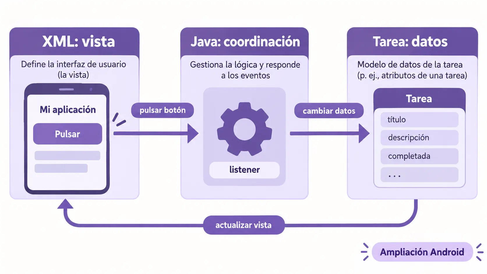

Contenido de la página
Fuera del itinerario obligatorio y de las 100 horas. No aporta requisitos adicionales de evaluación. Se conserva este material para alumnado interesado en la equivalencia Android. Las actividades que aparecen a continuación son variantes opcionales de EJ01/PB01; la versión evaluable es la web. No requiere realizar la variante Android para superar ningún CE.
Guía del profesor · Desarrollo de Interfaces · DAM
Versión: 1.0 · 8 de septiembre de 2026.
Contenido básico: Patrones de arquitectura de las aplicaciones gráficas.
Actividades: RA1-AMP-ANDROID-EJ01 y RA1-AMP-ANDROID-PB01.
CE relacionado: RA1.e — análisis del código generado por el editor visual.
Tiempo: 35 minutos de explicación y ejemplo, 15 minutos de práctica y 10 minutos de corrección. Estos 60 minutos forman parte de las bolsas ya previstas para RA1, no se añaden a sus 18 horas.
1. Orientaciones para el profesor
El alumnado sabe Java, pero todavía necesita relacionar el código con lo que aparece y sucede en una pantalla. El objetivo de este bloque es que pueda abrir un proyecto generado y distinguir presentación, datos y coordinación. No tiene que programar una arquitectura ni memorizar sus siglas.
Este capítulo mantiene el primer título del índice curricular. En clase puede impartirse después de una primera demostración de creación visual, tal como permite la secuencia de la matriz.
Objetivos observables
Al terminar, el alumno podrá:
- Identificar qué archivo describe los controles de una pantalla.
- Distinguir los datos de la aplicación de su representación visual.
- Seguir una interacción desde el control hasta la actualización de la pantalla.
- Explicar qué responsabilidad debe cambiar ante un requisito sencillo.
- Detectar cuando una modificación generada por IA mezcla responsabilidades innecesariamente.
Material necesario
Este documento contiene todos los fragmentos y respuestas de la práctica de lectura. Se puede utilizar sin instalar Android Studio. El profesor puede proyectarlos o entregar únicamente la sección de enunciado.
Los fragmentos son una referencia didáctica preparada, no una exportación obtenida durante esta sesión desde Android Studio. Son suficientes para resolver la actividad de identificación, pero no constituyen un proyecto Android autónomo: faltan configuración, manifiesto, recursos y entorno de compilación.
Para utilizar PB01 como evidencia definitiva de RA1.e, el profesor incorporará también el archivo XML producido o guardado por el editor visual en la ruta técnica descrita al final. Hasta entonces, la práctica permite comprobar la comprensión de estructura y responsabilidades, pero no acredita por sí sola la procedencia del código desde un editor.
2. Contenidos explicados
2.1 Qué significa arquitectura

La arquitectura organiza las responsabilidades y las relaciones entre las partes de una aplicación. En una aplicación gráfica conviene plantear tres preguntas:
- ¿Dónde se describe lo que ve y utiliza la persona?
- ¿Dónde están los datos y las reglas que les dan significado?
- ¿Qué conecta la interacción del usuario con esos datos y con la pantalla?
Una pantalla puede tener un botón con el texto «Completar». Ese texto pertenece a su presentación. Que una tarea esté completada es un dato. La respuesta a pulsar el botón necesita conectar ambos: modificar el dato y mostrar el nuevo estado.
Separar responsabilidades permite pedir a la IA un cambio preciso. Si solo queremos cambiar la etiqueta del botón, no necesitamos sustituir el objeto que representa la tarea.
2.2 Vista: representación e interacción
La vista reúne los elementos que presentan información y permiten interactuar: etiquetas, campos, botones, listas y contenedores. En una interfaz Android basada en Views, parte de su estructura se describe en XML. Ese XML puede editarse mediante el editor visual.
El archivo describe controles y propiedades. No contiene necesariamente las tareas, productos o usuarios de la aplicación. Una etiqueta puede mostrar un dato sin ser el lugar donde ese dato se conserva.
Pregunta para clase: si un campo muestra «Preparar exposición», ¿ese texto está almacenado necesariamente dentro del archivo de diseño?
Respuesta: no; puede llegar desde un objeto durante la ejecución. Hay que seguir la asignación para saber su origen.
2.3 Modelo: datos y reglas
El modelo representa información y comportamiento del dominio: una tarea, su título y si está completada. Una clase Java resulta familiar al alumnado y permite estudiar esta responsabilidad sin introducir nueva sintaxis.
Un modelo sencillo puede vivir en memoria. No hace falta una base de datos para hablar de modelo. Persistir los datos entre ejecuciones es otra necesidad que se tratará cuando corresponda.
Una regla como «una tarea completada no vuelve a estado pendiente con esta acción» se expresa en la lógica del dominio o del estado de la aplicación. La vista puede reflejarla deshabilitando un botón, pero ocultar o deshabilitar un control no sustituye siempre la regla.
2.4 Coordinación: conectar el gesto con el resultado
Una interacción produce un evento. Algún código recibe ese evento, solicita una operación y actualiza la representación.
Para esta primera lectura utilizaremos una Activity pequeña como coordinadora. Una Activity es también un componente del ciclo de vida de Android: no debe identificarse automáticamente con «el controlador» de cualquier arquitectura. Aquí desempeña tareas de coordinación por una decisión didáctica local.
El alumno debe poder contar la secuencia en lenguaje corriente: «Al pulsar, se marca la tarea; después se actualiza el mensaje y se deshabilita el botón».
2.5 MVC y MVVM: comparación introductoria
| Aspecto | MVC | MVVM |
|---|---|---|
| Datos y reglas | Modelo. | Modelo y las capas de datos que utilice la aplicación. |
| Representación | Vista. | Vista. |
| Coordinación o estado de presentación | Un controlador interpreta interacciones y coordina operaciones. | Un ViewModel expone estado y operaciones de presentación; la vista representa ese estado. |
| Pregunta para reconocerlo | ¿Quién recibe la interacción y coordina el cambio? | ¿Dónde está el estado que observa o consume la vista? |
| Error frecuente | Llamar controlador a cualquier archivo que tenga eventos. | Suponer que crear una clase llamada ViewModel ya implementa el patrón. |
Las implementaciones varían. El objetivo es reconocer responsabilidades, no clasificar todo proyecto con una etiqueta rígida. Android recomienda separación de responsabilidades y una organización por capas, con estado de interfaz y flujo de datos definidos; esta explicación introductoria no sustituye esas recomendaciones para proyectos completos. Guía de arquitectura de Android.
2.6 Material Design 3 y arquitectura
Referencia de diseño de todo el curso: Material Design 3 de Google. Sus pautas guiarán todos los ejemplos y prácticas de interfaz. La documentación de una librería explica cómo implementarlas, pero no sustituye esta referencia. En cada actividad se identificarán las pautas aplicables y las comprobaciones correspondientes.
En este bloque se observarán la jerarquía tipográfica, el componente de botón y su estado deshabilitado, y la separación entre el tema visual y los datos. Los valores de espaciado del ejemplo son decisiones de maquetación que deben revisarse en la pantalla; no se presentan como medidas universales obligatorias de M3.
M3 orienta decisiones de presentación: roles de color, tipografía, componentes y estados. La arquitectura organiza las responsabilidades de la aplicación. Se pueden aplicar pautas M3 a una vista sin cambiar cómo se representa una tarea en el modelo.
Una interfaz bonita no demuestra que los datos estén bien organizados. Del mismo modo, una separación correcta de archivos no garantiza accesibilidad. Son aspectos que se comprueban por separado.
3. RA1-AMP-ANDROID-EJ01 — Una tarea y un botón para completarla
3.1 Situación y resultado esperado
La aplicación muestra «Preparar exposición», el estado «Pendiente» y un botón «Completar». Al pulsarlo, el estado pasa a «Completada» y el botón queda deshabilitado.
El ejemplo separa tres responsabilidades:
| Archivo de referencia | Responsabilidad |
|---|---|
res/layout/activity_tarea.xml |
Describe los controles y su distribución. |
Tarea.java |
Representa el título y el estado de una tarea. |
TareaActivity.java |
Carga la vista, conecta el evento y representa el estado. |
Los nombres son ilustrativos y consistentes dentro de este documento; no son enlaces a archivos adicionales entregados.
3.2 Especificación orientativa para Gemini
ROL: asistente de desarrollo y explicación para alumnado que conoce Java.
TAREA: preparar una pantalla Android Views para mostrar y completar una tarea.
CONTEXTO: una clase Tarea con título y estado; XML editable visualmente y
una Activity Java pequeña que conecta la interacción.
RESTRICCIONES: usar componentes Material 3 con un tema compatible en el
proyecto; nombres descriptivos; sin red ni base de datos; separar datos,
descripción visual y coordinación. No convertir el proyecto a Compose.
SALIDA: identificar los archivos modificados, explicar cada responsabilidad
con fragmentos breves y proponer comprobaciones del comportamiento.
No afirmar que está probado si no se ha ejecutado.El prompt orienta la producción; la solución de referencia siguiente permite explicar el concepto aunque la IA produzca otros nombres.
3.3 Archivo de vista: estructura XML
Fragmento completo de layout para lectura. Requiere los recursos y dependencias del proyecto docente antes de compilar.
<?xml version="1.0" encoding="utf-8"?>
<LinearLayout xmlns:android="http://schemas.android.com/apk/res/android"
android:layout_width="match_parent"
android:layout_height="wrap_content"
android:orientation="vertical"
android:padding="24dp">
<com.google.android.material.textview.MaterialTextView
android:id="@+id/textoTitulo"
android:layout_width="match_parent"
android:layout_height="wrap_content"
android:textAppearance="?attr/textAppearanceTitleLarge" />
<com.google.android.material.textview.MaterialTextView
android:id="@+id/textoEstado"
android:layout_width="match_parent"
android:layout_height="wrap_content"
android:layout_marginTop="8dp" />
<com.google.android.material.button.MaterialButton
android:id="@+id/botonCompletar"
android:layout_width="wrap_content"
android:layout_height="wrap_content"
android:layout_marginTop="16dp"
android:text="@string/completar" />
</LinearLayout>Lectura guiada:
LinearLayoutorganiza los hijos verticalmente; no almacena la tarea.- Los tres
android:idpermiten reconocer los controles desde Java. @string/completarreferencia un recurso de texto; no es el nombre de un método.- El título y el estado no tienen texto fijo aquí: la Activity los asignará al representar el modelo.
- El aspecto completo depende también del tema. Utilizar un nombre de componente Material no basta para afirmar conformidad M3 o accesibilidad.
3.4 Modelo: Tarea.java
public class Tarea {
private final String titulo;
private boolean completada;
public Tarea(String titulo) {
this.titulo = titulo;
this.completada = false;
}
public String getTitulo() {
return titulo;
}
public boolean estaCompletada() {
return completada;
}
public void completar() {
completada = true;
}
}Esta clase contiene datos y una operación. No conoce botones, colores ni archivos XML. Cambiar la etiqueta del botón no requiere modificarla.
3.5 Coordinación: extracto de TareaActivity.java
Se omiten paquete e imports. AppCompatActivity, Bundle, MaterialTextView y MaterialButton deben estar importados en el proyecto. Los textos pendiente, completada y completar deben existir en los recursos.
public class TareaActivity extends AppCompatActivity {
private final Tarea tarea = new Tarea("Preparar exposición");
private MaterialTextView textoTitulo;
private MaterialTextView textoEstado;
private MaterialButton botonCompletar;
@Override
protected void onCreate(Bundle savedInstanceState) {
super.onCreate(savedInstanceState);
setContentView(R.layout.activity_tarea);
textoTitulo = findViewById(R.id.textoTitulo);
textoEstado = findViewById(R.id.textoEstado);
botonCompletar = findViewById(R.id.botonCompletar);
botonCompletar.setOnClickListener(v -> {
tarea.completar();
mostrarTarea();
});
mostrarTarea();
}
private void mostrarTarea() {
textoTitulo.setText(tarea.getTitulo());
textoEstado.setText(tarea.estaCompletada()
? R.string.completada : R.string.pendiente);
botonCompletar.setEnabled(!tarea.estaCompletada());
}
}La Activity es código de lógica preparado o generado con IA; no se afirma que el editor visual genere este escuchador Java. El archivo descriptivo editado visualmente es el XML. Esta distinción es importante para documentar RA1.e y RA1.f.
3.6 Recorrido resuelto
| Momento | Instrucción o dato | Efecto esperado |
|---|---|---|
| Creación | new Tarea(...) |
Existe una tarea inicialmente pendiente. |
| Carga visual | setContentView(...) |
Se utiliza el layout descrito en XML. |
| Conexión | findViewById(...) |
Se obtienen referencias a los controles identificados. |
| Primera representación | mostrarTarea() |
Aparecen título, estado pendiente y botón habilitado. |
| Pulsación | tarea.completar() |
Cambia el dato del modelo. |
| Actualización | Segunda llamada a mostrarTarea() |
Cambian mensaje y estado del botón. |
v -> { ... } es una lambda de Java: aquí representa el bloque que se ejecuta cuando llega la pulsación. No se pide escribirla de memoria.
3.7 Cambio asistido y solución esperada
Petición: «Quiero que el botón muestre “Marcar como terminada” en lugar de “Completar”. Mantén los identificadores, los datos y la acción».
Prompt correctivo:
Cambia únicamente el valor del recurso de texto completar a
“Marcar como terminada”. Conserva el identificador botonCompletar,
la clase Tarea y el escuchador. Muestra la diferencia y explica
por qué no hace falta cambiar el modelo.Diferencia esperada en strings.xml:
- <string name="completar">Completar</string>
+ <string name="completar">Marcar como terminada</string>Explicación docente: cambia la presentación, no el significado de la operación. El XML conserva la referencia @string/completar; el evento sigue usando el mismo botón. Este cambio es un ejercicio de separación de responsabilidades; por sí solo no acredita modificación del código generado por el editor para RA1.f.
Comprobación esperada: aparece el nuevo texto, la pulsación completa la tarea y el botón se deshabilita. Son resultados esperados por inspección; no se han ejecutado en Android durante la elaboración de este documento.
3.8 Límites del ejemplo
El estado vive en el objeto de la Activity. La recreación de la Activity puede perderlo; este ejemplo no incorpora conservación del estado ni persistencia. Se explicita para no confundir un modelo en memoria con una solución completa de ciclo de vida. No se solicita al alumno resolverlo en PB01.
4. RA1-AMP-ANDROID-PB01 — Enunciado de evaluación: mapa de responsabilidades
Tiempo: 15 minutos.
Entrega: una tabla y cuatro respuestas breves. No se escribe código.
CE al que aporta: RA1.e, con la condición de procedencia del XML indicada en la ficha docente.
4.1 Situación
Una aplicación de reservas muestra el nombre de una sala y si está disponible. Al pulsar «Reservar», se cambia el dato de disponibilidad y se vuelve a mostrar el estado.
Lee estos fragmentos. Son distintos del ejemplo de tareas, pero mantienen la misma organización.
A. Extracto de activity_reserva.xml — se muestra el contenido relevante de una vista, no el archivo XML completo:
<com.google.android.material.textview.MaterialTextView
android:id="@+id/textoSala"
android:layout_width="match_parent"
android:layout_height="wrap_content" />
<com.google.android.material.button.MaterialButton
android:id="@+id/botonReservar"
android:layout_width="wrap_content"
android:layout_height="wrap_content"
android:text="@string/reservar" />B. Reserva.java:
public class Reserva {
private final String sala;
private boolean disponible = true;
public Reserva(String sala) {
this.sala = sala;
}
public String getSala() { return sala; }
public boolean estaDisponible() { return disponible; }
public void reservar() { disponible = false; }
}C. Extracto de ReservaActivity.java — el resto del proyecto inicializa los controles y utiliza el layout A:
private final Reserva reserva = new Reserva("Aula 2");
private void conectarBoton() {
botonReservar.setOnClickListener(v -> {
reserva.reservar();
mostrarReserva();
});
}
private void mostrarReserva() {
textoSala.setText(reserva.getSala());
botonReservar.setEnabled(reserva.estaDisponible());
}4.2 Tareas
- Completa una tabla con A, B y C: responsabilidad, fragmento que lo demuestra y efecto en la aplicación.
- En A, identifica el control que mostrará el nombre de la sala y explica cómo lo reconoces. ¿Contiene A el texto «Aula 2»?
- Explica en orden qué ocurre desde la pulsación hasta que el botón queda deshabilitado. Indica dónde cambia el dato y dónde cambia el control.
- Se pide cambiar el texto visible «Reservar» a «Confirmar reserva». Señala qué recurso debe cambiar y qué partes deben conservarse. Redacta una instrucción breve para Gemini.
- Una IA propone sustituir
reserva.reservar()porbotonReservar.setEnabled(false). Explica qué información dejaría sin actualizar y qué sucedería al llamar de nuevo amostrarReserva().
Reparto orientativo: 5 minutos para tabla e identificación, 4 para recorrido y 6 para cambio y diagnóstico. El alumno puede consultar los fragmentos; las respuestas deben justificar su interpretación.
5. RA1-AMP-ANDROID-PB01 — Solución y corrección docente
Esta sección contiene las respuestas de evaluación. Debe separarse del enunciado si se entrega al alumnado.
5.1 Tabla resuelta
| Fragmento | Responsabilidad | Evidencia | Efecto |
|---|---|---|---|
| A | Vista o descripción visual. | Declara controles, identificadores, dimensiones y un recurso de texto. | Define dónde se podrá mostrar la sala y el botón de reserva. |
| B | Modelo. | Almacena sala y disponible; reservar() cambia este último dato. |
Representa si la reserva puede realizarse. |
| C | Coordinación y representación del estado. | Conecta el escuchador, invoca al modelo y actualiza controles. | Relaciona la pulsación con la reserva y con la actualización visual. |
Se acepta «lógica de pantalla» o «coordinación» para C. No se exige llamar MVC al conjunto ni se afirma que sea una implementación completa de arquitectura Android recomendada.
5.2 Respuestas esperadas
Identificación de A: textoSala es el identificador del MaterialTextView que C utiliza con setText. A no contiene «Aula 2»; ese valor se proporciona al construir Reserva en C y se almacena en B. No basta con adivinar por el nombre: la llamada textoSala.setText(reserva.getSala()) confirma la correspondencia.
Recorrido: la pulsación ejecuta el bloque del escuchador; reserva.reservar() cambia disponible a false; mostrarReserva() lee el modelo; setEnabled(false) deshabilita el botón.
Cambio de etiqueta: se cambia el valor del recurso reservar, referenciado en A como @string/reservar. Se conservan botonReservar, la clase Reserva, su estado y el escuchador. La distinción entre nombre del recurso y nombre de variable es parte de la comprensión.
Prompt válido:
Modifica únicamente el texto del recurso reservar a “Confirmar reserva”.
Conserva el identificador botonReservar y toda la lógica de ReservaActivity
y Reserva. Devuelve la diferencia del recurso y explica qué permanece igual.Diagnóstico de la propuesta incorrecta: deshabilitar el botón no cambia disponible, que seguiría siendo true. Cuando mostrarReserva() consulte ese dato, habilitará otra vez el botón. La corrección debe mantener el cambio del modelo y representar después su estado.
5.3 Indicadores observables, sin pesos
| Indicador | Evidencia suficiente | Error que requiere revisión |
|---|---|---|
| Analiza la descripción de la vista | Localiza controles, atributos y referencia de texto. | Confunde XML con el objeto de reserva. |
| Sigue el origen del dato | Relaciona constructor, campo, getter y setText. |
Afirma que el texto de la sala está fijado en el XML. |
| Distingue responsabilidades | Explica modelo y representación con instrucciones concretas. | Clasifica solo por el nombre del archivo. |
| Sigue la interacción | Describe cambio del dato y actualización visual en orden. | Afirma que deshabilitar el botón reserva la sala. |
| Formula un cambio acotado | Identifica el recurso y conserva conexiones y modelo. | Pide regenerar todo sin justificarlo. |
Estos indicadores permiten corregir PB01; no implican que una única práctica de arquitectura cubra todo RA1.e. La matriz del RA lo desarrolla también mediante otras actividades.
5.4 Dificultades y ayudas graduadas
- Confunde dato y texto visible: pedir que busque primero
setTexty después el método que proporciona su argumento. - No reconoce la lambda: leerla como «cuando se pulse, ejecutar estas dos instrucciones».
- Memoriza nombres de archivos: cambiar oralmente
Reserva.javaporSalaReservable.javay preguntar si cambia su responsabilidad. - Piensa que el XML ejecuta la reserva: señalar que declara el botón y buscar aparte la asociación del evento.
- La IA da una explicación vaga: exigir una instrucción concreta que sustente cada afirmación.
7. Fuentes
Material Design 3: referencia principal de diseño para todo el curso.
Currículo: relación RA–CE–contenidos: ubicación del contenido y del criterio.
Guía de arquitectura de Android: separación de responsabilidades y capas.
ConstraintLayout: operaciones visuales y restricciones.
Material Components para Android: situación de Views e integración Material3.
Consulta documental: 8 de septiembre de 2026. Los ejemplos son elaboración didáctica propia; las referencias no se presentan como fuente de código exportado ni como evidencia de ejecución local.